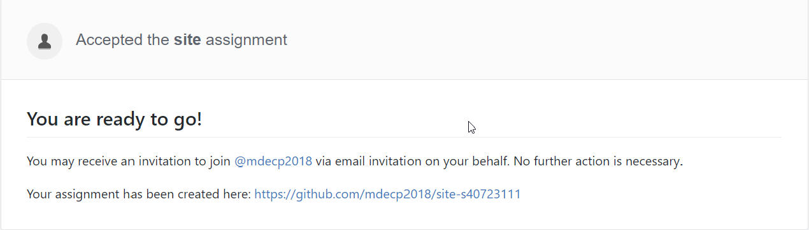

# 導入 Ex1 原始碼
a = 0
def my_print(n, input_str):
print("以下將重覆列印 '", input_str + "' " + str(n) + "次")
for i in range(n):
print(i, input_str)
my_print(5, "Hello World!")
the_str = "開始學習 Python"
num = input("請輸入要列印的次數!")
my_print(int(num), the_str)
a = a + 1
print("(" + str(a) + ")", "_" * 25)
def myfun():
yield 1
yield 2
yield 3
for i in myfun():
print(i)
x = iter(myfun())
y = list(myfun())
a = a + 1
print("(" + str(a) + ")", "_" * 25)
print(x.__next__())
print(x.__next__())
print(x.__next__())
print(y)
在遠端執行
會出現要列印的次數

然後存檔用SciTE執行